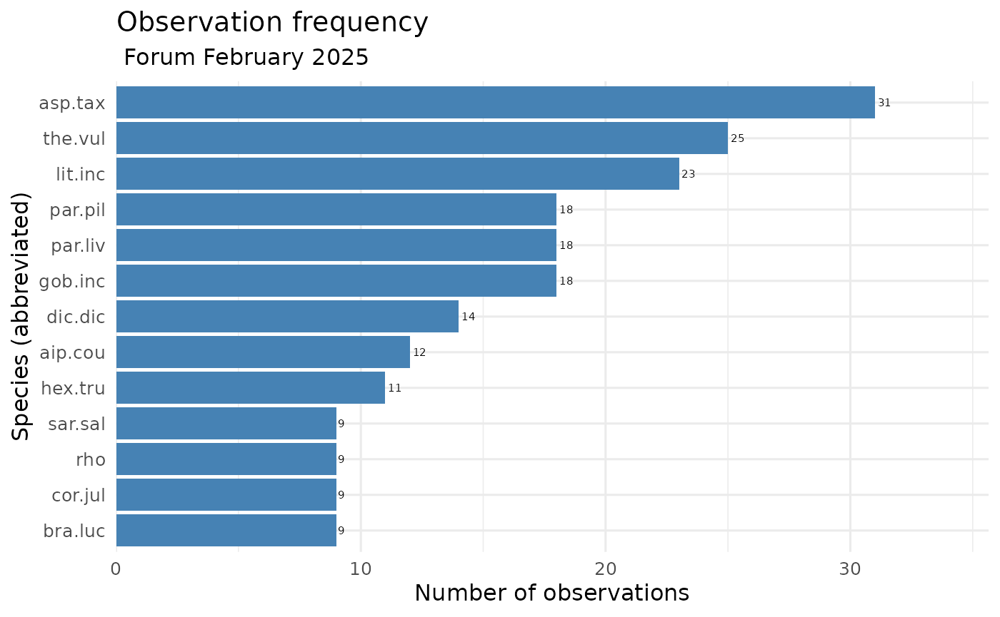

This document introduces you to rminka basic set of tools, and shows you how to apply them to obtain your desired information. Once you’ve installed, read vignette(“rminka”) to learn more.
- Project Queries
Project-related functions will be illustrated using the Biomarató Tarragona 2025 project.
● mnk_proj_byname()
Initially, only the project name is known, so search for its ID with
mnk_proj_byname(). Here we use the query “biomarato
2025”.
prj_names <- mnk_proj_byname("biomarato 2025")
prj_names
#> # A tibble: 5 × 8
#> id title place_id slug created_at updated_at project_type description
#> <int> <chr> <int> <chr> <chr> <chr> <chr> <chr>
#> 1 417 BioMARató… 244 biom… 2025-03-2… 2026-06-2… collection "La BioMAR…
#> 2 418 BioMARató… 245 biom… 2025-03-2… 2026-05-0… collection "La BioMAR…
#> 3 419 BioMARató… 249 biom… 2025-03-2… 2026-05-0… collection "La BioMAR…
#> 4 420 BioMARató… 248 biom… 2025-03-2… 2026-05-0… collection "La BioMAR…
#> 5 424 BioMARato… 701 biom… 2025-04-0… 2026-09-0… collection "Descobre …
# For this example
prj_names[,c(1:2)]
#> # A tibble: 5 × 2
#> id title
#> <int> <chr>
#> 1 417 BioMARató 2025 (Catalunya)
#> 2 418 BioMARató 2025 (Girona)
#> 3 419 BioMARató 2025 (Tarragona)
#> 4 420 BioMARató 2025 (Barcelona)
#> 5 424 BioMARatona 2025● mnk_proj_info()
Once the project ID is known, retrieve its details with
mnk_proj_info(). The Biomarató Tarragona 2025 project has
ID 419.
prj_info <- mnk_proj_info(419)
prj_info
#> # A tibble: 1 × 7
#> id title created_at subscrib_users place_id slug description
#> <int> <chr> <chr> <int> <int> <chr> <chr>
#> 1 419 BioMARató 2025 (Ta… 2025-03-2… 23 249 biom… La BioMARa…● mnk_proj_user()
Retrieve users subscribed to a project with
mnk_proj_user() and its ID.
prj_user <- mnk_proj_user(419)
prj_user
#> # A tibble: 23 × 16
#> id login name created_at observations_count
#> <int> <chr> <chr> <dttm> <int>
#> 1 4 xasalva "xavi salvador c… 2021-04-16 10:44:11 85319
#> 2 6 ramonservitje "" 2022-04-16 15:47:14 1277
#> 3 11 jaume-piera "Jaume Piera" 2022-04-18 15:45:37 12711
#> 4 12 sonialinan NA 2022-04-19 12:53:18 410
#> 5 13 adrisoacha "Karen Soacha" 2022-04-21 09:40:57 600
#> 6 52 joselu_00 "José Luís Guijo… 2022-05-10 13:38:20 404
#> 7 159 jaumesaltiveri "Jaume Saltiveri" 2022-07-17 13:30:45 2
#> 8 166 anomalia "anomalia" 2022-07-19 07:56:08 23
#> 9 197 peixderoca24 "Guillem Mayor S… 2022-08-08 12:58:18 6517
#> 10 219 ealcaniz "Edu Alcaniz" 2022-08-27 15:52:52 32302
#> # ℹ 13 more rows
#> # ℹ 11 more variables: identifications_count <int>, species_count <int>,
#> # activity_count <int>, journal_posts_count <int>, orcid <chr>,
#> # icon_url <chr>, site_id <int>, roles <list>, spam <lgl>, suspended <lgl>,
#> # universal_search_rank <int>Note: To retrieve all project participants, including users who are
not subscribed, download observations with mnk_proj_obs()
and extract unique user_login values. Each observation
includes the observer’s login.
To list participants who contributed observations in a particular month, download that month’s observations and extract unique logins. The example below does this for May 2025:
# 1. Download all observations for the project in may 2025
obs_2025 <- mnk_proj_obs(
419, year = 2025, month = 5, quiet = TRUE
)
# 2. Extract the unique participants
participants_may_2025 <- obs_2025 %>%
distinct(user_login) %>%
arrange(user_login)
participants_may_2025
#> # A tibble: 31 × 1
#> user_login
#> <chr>
#> 1 aci
#> 2 albertvim
#> 3 allbluediving
#> 4 bertinhaco
#> 5 biosub
#> 6 elibonfill
#> 7 elisenda_casabona
#> 8 evararo
#> 9 francesca
#> 10 hectorserranocereijo
#> # ℹ 21 more rows● mnk_proj_obs()
Returns observations for a project in a selected year and,
optionally, month. For project 419, the full year 2025 is retrieved with
mnk_proj_obs(419, year = 2025), or May with
mnk_proj_obs(419, year = 2025, month = 5).
prj_obs <- mnk_proj_obs(419, year = 2025, month = 5)
#> --- STARTING DOWNLOAD FOR MONTH: May 2025 ---
#>
#> --- Evaluating month: May 2025 ---
#> The month of May has 1183 records.
#> -> Total <= 10,000. Downloading month in one go...
#>
#> --- FINISHING... ---
#> Download complete! A total of 1,183 records were obtained.
prj_obs[2:14]
#> # A tibble: 1,183 × 13
#> observed_on year month week day hour created_at updated_at latitude
#> <chr> <int> <int> <int> <int> <int> <chr> <chr> <dbl>
#> 1 2025-05-31 2025 5 22 31 12 2026-07-03T12:… 2026-07-0… 41.1
#> 2 2025-05-31 2025 5 22 31 12 2026-07-03T12:… 2026-07-0… 41.1
#> 3 2025-05-31 2025 5 22 31 11 2026-07-03T12:… 2026-07-0… 41.1
#> 4 2025-05-31 2025 5 22 31 12 2026-07-03T12:… 2026-07-0… 41.1
#> 5 2025-05-31 2025 5 22 31 12 2026-07-03T12:… 2026-07-0… 41.1
#> 6 2025-05-31 2025 5 22 31 12 2026-07-03T12:… 2026-07-0… 41.1
#> 7 2025-05-31 2025 5 22 31 12 2026-07-03T12:… 2026-07-0… 41.1
#> 8 2025-05-31 2025 5 22 31 12 2026-07-03T12:… 2026-07-0… 41.1
#> 9 2025-05-31 2025 5 22 31 12 2026-07-03T12:… 2026-07-0… 41.1
#> 10 2025-05-31 2025 5 22 31 12 2026-07-03T12:… 2026-07-0… 41.1
#> # ℹ 1,173 more rows
#> # ℹ 4 more variables: longitude <dbl>, positional_accuracy <int>,
#> # geoprivacy <chr>, obscured <lgl>● mnk_user_byname()
Initially, only an approximate name is known, so search for the corresponding login. Here, the query “xavi” returns possible logins; select Xavier Salvador from the results.
user_name <- mnk_user_byname("xavi")
user_name
#> # A tibble: 6 × 5
#> id login name observations_count created_at
#> <int> <chr> <chr> <int> <dttm>
#> 1 47 xavi NA 6 2022-05-06 10:47:06
#> 2 4 xasalva "xavi salvador… 85319 2021-04-16 10:44:11
#> 3 1178 xparellada "Xavier Parell… 1580 2023-10-31 09:07:52
#> 4 857 xavibou "Xavi Bou" 1581 2023-07-28 13:27:50
#> 5 1042 xavi-de-yzaguirre "" 459 2023-09-26 13:18:42
#> 6 17242 xavisanjuan NA 390 2025-07-20 16:21:42● mnk_user_info()
Once the user ID is known, retrieve detailed information with
mnk_user_info(). Xavier Salvador (login “xasalva”) has user
ID 4.
user_info <- mnk_user_info(4)
user_info
#> # A tibble: 1 × 16
#> id login name created_at observations_count identifications_count
#> <int> <chr> <chr> <dttm> <int> <int>
#> 1 4 xasa… xavi… 2021-04-16 10:44:11 85319 474994
#> # ℹ 10 more variables: species_count <int>, activity_count <int>,
#> # journal_posts_count <int>, orcid <chr>, icon_url <chr>, site_id <int>,
#> # roles <list>, spam <lgl>, suspended <lgl>, universal_search_rank <int>● mnk_user_proj()
mnk_user_proj() returns projects to which a user is
subscribed. For Xavier Salvador (user ID 4), use
mnk_user_proj(4).
Note: Projects where a user has contributed observations but is not formally subscribed cannot be retrieved directly in R.
user_project <- mnk_user_proj(4)
user_project
#> # A tibble: 10 × 7
#> id title description slug icon place_id created_at
#> <int> <chr> <chr> <chr> <chr> <int> <chr>
#> 1 522 (Principal) Biodiverciutat… "Aquest pr… prin… http… NA 2025-10-2…
#> 2 144 ANERIS - Biodiversitat D.C… "El projec… aner… http… 337 2023-06-0…
#> 3 312 ANERIS - Biodiversitat Llo… "El projec… aner… http… 416 2024-06-1…
#> 4 146 ANERIS - Biodiversitat UNI… "El projec… aner… http… 338 2023-06-0…
#> 5 177 ANERIS - Biodiversitat al … "El projec… aner… http… 361 2023-08-2…
#> 6 183 ANERIS - SASBA (Seguiment … "Descobrim… aner… http… 251 2023-10-0…
#> 7 44 Anthozoos del Barcelonés "Estudi de… anth… http… NA 2022-09-2…
#> 8 444 Arees verdes marines - Emp… "Aquest pr… aree… http… 712 2025-05-2…
#> 9 448 BIODIVERSIDAD MARINA BADIA… "Biodivers… biod… http… 714 2025-05-2…
#> 10 181 BM-PortSalvi "El projec… bm-p… http… 367 2023-09-1…● mnk_user_obs()
Returns observations for a user in a selected year and, optionally,
month. For Xavier Salvador (user ID 4), retrieve observations for all of
2025 with mnk_user_obs(4, year = 2025), or for August with
mnk_user_obs(4, year = 2025, month = 8).
user_obs <- mnk_user_obs(user_id = 4, year = 2025, month = 8)
#> --- STARTING DOWNLOAD FOR MONTH: August 2025 ---
#>
#> --- Evaluating month: August 2025 ---
#> The month of August has 2347 records.
#> -> Total <= 10,000. Downloading month in one go...
#>
#> --- FINISHING... ---
#> Download complete! A total of 2,347 records were obtained.
user_obs
#> # A tibble: 2,347 × 29
#> id observed_on year month week day hour created_at updated_at
#> <int> <chr> <int> <int> <int> <int> <int> <chr> <chr>
#> 1 596411 2025-08-30 2025 8 35 30 12 2025-10-17T10:40… 2025-10-1…
#> 2 596410 2025-08-30 2025 8 35 30 12 2025-10-17T10:40… 2025-10-1…
#> 3 596409 2025-08-30 2025 8 35 30 12 2025-10-17T10:40… 2025-10-1…
#> 4 596408 2025-08-30 2025 8 35 30 12 2025-10-17T10:40… 2025-10-1…
#> 5 596407 2025-08-30 2025 8 35 30 12 2025-10-17T10:40… 2025-10-1…
#> 6 596406 2025-08-30 2025 8 35 30 12 2025-10-17T10:40… 2025-10-1…
#> 7 596405 2025-08-30 2025 8 35 30 12 2025-10-17T10:40… 2025-10-1…
#> 8 596404 2025-08-30 2025 8 35 30 12 2025-10-17T10:40… 2025-10-1…
#> 9 596403 2025-08-30 2025 8 35 30 12 2025-10-17T10:40… 2025-10-1…
#> 10 596402 2025-08-30 2025 8 35 30 12 2025-10-17T10:40… 2025-10-1…
#> # ℹ 2,337 more rows
#> # ℹ 20 more variables: latitude <dbl>, longitude <dbl>,
#> # positional_accuracy <int>, geoprivacy <chr>, obscured <lgl>, uri <chr>,
#> # url_picture_icon <chr>, url_picture_med <chr>, url_picture_orig <chr>,
#> # quality_grade <chr>, taxon_id <int>, taxon_name <chr>, taxon_rank <chr>,
#> # taxon_min_ancestry <chr>, taxon_endemic <lgl>, taxon_threatened <lgl>,
#> # taxon_introduced <lgl>, taxon_native <lgl>, user_id <int>, …● mnk_place_byname()
Initially, only an approximate place name is known, so search for its ID. The query “forum” returns possible places. The place used below is “Piscines del Fòrum” (ID 253); try different search terms if needed.
places <- mnk_place_byname("Forum")
places[,1:6]
#> # A tibble: 3 × 6
#> place_id slug name area display_name location_latitud
#> <int> <chr> <chr> <dbl> <chr> <dbl>
#> 1 253 piscinas-del-forum-fecdas Pisc… 4.28e-5 Piscinas de… 41.4
#> 2 257 platja-banys-del-forum Plat… 1.28e-5 Platja Bany… 41.4
#> 3 820 atles-zona-de-banys-del-… Atle… 9.59e-6 Atles Zona … 41.4● mnk_place_sf()
Returns the sf geometry for a place. For Piscines del
Fòrum, retrieve the geometry with mnk_place_sf(253).
The example maps the geometry with leaflet using the
default WGS 84 (EPSG:4326) coordinates. The returned sf
object includes the place name.
# 1. Downloading the geometry
places_forum <- mnk_place_sf(253)
# 2. Drawing the map
forum_sf <-leaflet(places_forum) %>%
addProviderTiles("OpenStreetMap", group = "OSM") %>%
addProviderTiles("Esri.WorldImagery", group = "Satélite") %>%
addPolygons(
color = "#2c4fb8",
weight = 2,
opacity = 1,
fillOpacity = 0.4,
label = ~name, # information added from previous function
highlightOptions = highlightOptions(
weight = 3, bringToFront = TRUE
)
) %>%
addLayersControl(baseGroups = c("Satélite", "OSM"))
forum_sf● mnk_place_obs()
Returns observations recorded within a place for a selected year and,
optionally, month or day. The result is a data frame without geometry.
For Piscines del Fòrum, retrieve February 2025 observations with
mnk_place_obs(place_id = 253, year = 2025, month = 2).
Convert the result to an sf object with
mnk_obs_sf() and map the points with
leaflet.
obs_place <- mnk_place_obs(place_id = 253, year = 2025, month = 2, quiet = TRUE)
obs_place
#> # A tibble: 529 × 30
#> id observed_on year month week day hour created_at updated_at
#> <int> <chr> <int> <int> <int> <int> <int> <chr> <chr>
#> 1 427205 2025-02-19 2025 2 8 19 11 2025-03-19T12:44… 2025-03-1…
#> 2 427204 2025-02-19 2025 2 8 19 12 2025-03-19T12:44… 2025-03-1…
#> 3 427203 2025-02-19 2025 2 8 19 12 2025-03-19T12:44… 2026-01-2…
#> 4 427202 2025-02-19 2025 2 8 19 12 2025-03-19T12:44… 2025-03-1…
#> 5 427201 2025-02-19 2025 2 8 19 12 2025-03-19T12:44… 2025-03-1…
#> 6 427200 2025-02-19 2025 2 8 19 12 2025-03-19T12:44… 2025-03-1…
#> 7 427199 2025-02-19 2025 2 8 19 12 2025-03-19T12:44… 2025-03-1…
#> 8 427198 2025-02-19 2025 2 8 19 12 2025-03-19T12:44… 2025-03-1…
#> 9 427197 2025-02-19 2025 2 8 19 11 2025-03-19T12:44… 2025-03-1…
#> 10 427196 2025-02-19 2025 2 8 19 11 2025-03-19T12:44… 2025-03-1…
#> # ℹ 519 more rows
#> # ℹ 21 more variables: latitude <dbl>, longitude <dbl>,
#> # positional_accuracy <int>, geoprivacy <chr>, obscured <lgl>, uri <chr>,
#> # url_picture_icon <chr>, url_picture_med <chr>, url_picture_orig <chr>,
#> # quality_grade <chr>, taxon_id <int>, taxon_name <chr>, taxon_rank <chr>,
#> # taxon_min_ancestry <chr>, taxon_endemic <lgl>, taxon_threatened <lgl>,
#> # taxon_introduced <lgl>, taxon_native <lgl>, user_id <int>, …
# Use the packaged sample if the live query returns no observations.
if (nrow(obs_place) == 0) {
obs_place <- subset(cached_obs, taxon_name %in% c(
"Diplodus sargus", "Parablennius pilicornis"
))
}
# Convert the data frame to an sf object for mapping.
obs_sf <- mnk_obs_sf(obs_place, "id", "taxon_name", "observed_on",
"uri", "user_login")
# Prepare text for the marker popup.
popup_final <- paste0(
"ID: ", obs_sf$id, "<br>",
"Species: ", obs_sf$taxon_name, "<br>",
"Observer: ", obs_sf$user_login, "<br>",
"Date: ", obs_sf$observed_on
)
# Only the observations:
leaflet(obs_sf) %>%
addProviderTiles("OpenStreetMap", group = "OSM") %>%
addProviderTiles("Esri.WorldImagery", group = "Satélite") %>%
addMarkers(lng = ~longitude,
lat = ~latitude,
popup = popup_final) %>%
addLayersControl(baseGroups = c("Satélite", "OSM"))
# Observations plus place maping
forum_sf %>%
addMarkers(data = obs_sf, popup = ~popup_final)● mnk_obs_id()
Retrieves the full record for a known Minka observation ID, including its taxonomic, location, and identification details.
# Retrieve the observation with ID 553028.
obs_id <- mnk_obs_id(id = 553028)
obs_id
#> # A tibble: 1 × 166
#> quality_grade time_observed_at taxon_geoprivacy annotations uuid id
#> <chr> <chr> <lgl> <list> <chr> <int>
#> 1 research 2025-08-22T12:22:00+0… NA <list [0]> b106… 553028
#> # ℹ 160 more variables: cached_votes_total <int>,
#> # identifications_most_agree <lgl>, species_guess <chr>,
#> # identifications_most_disagree <lgl>, tags <list>,
#> # positional_accuracy <int>, comments_count <int>, site_id <int>,
#> # created_time_zone <chr>, license_code <chr>, observed_time_zone <chr>,
#> # quality_metrics <list>, public_positional_accuracy <int>,
#> # reviewed_by <list>, oauth_application_id <lgl>, flags <list>, …● mnk_obs()
This is the core function of the package. It supports searches by
project, user, place, date, taxon, or geographic area. Two notes apply
to mnk_obs() calls:
When a query runs, a message reports the number of matching
observations. By default, at most 10,000 records are downloaded. Set
limit_download = FALSE to retrieve all matching
records.
To retrieve only validated records, use
quality = "research". Previous examples covered project,
user, and place searches. The following examples show taxon and
bounding-box searches.
- Taxon search. The following examples search for the genus Raja in 2025 and the species Raja brachyura in 2023.
# Suppress progress messages with `quiet = TRUE`.
# Get 2025 Raja observations for Xavier Salvador (user ID 4).
obs <- mnk_obs(
taxon_name = "Raja", year = 2025, user_id = 4,
quiet = TRUE, quality = "research"
)
obs # show full dataframe
#> # A tibble: 38 × 29
#> id observed_on year month week day hour created_at updated_at
#> <int> <chr> <int> <int> <int> <int> <int> <chr> <chr>
#> 1 414056 2025-01-24 2025 1 4 24 0 2025-01-29T10:04… 2025-01-2…
#> 2 427152 2025-02-19 2025 2 8 19 20 2025-03-19T10:19… 2025-03-1…
#> 3 427148 2025-02-19 2025 2 8 19 20 2025-03-19T10:19… 2025-03-2…
#> 4 427142 2025-02-19 2025 2 8 19 20 2025-03-19T10:19… 2025-03-1…
#> 5 427141 2025-02-19 2025 2 8 19 20 2025-03-19T10:19… 2025-03-1…
#> 6 427140 2025-02-19 2025 2 8 19 20 2025-03-19T10:19… 2025-03-1…
#> 7 422169 2025-02-27 2025 2 9 27 20 2025-02-28T11:17… 2025-02-2…
#> 8 420087 2025-02-21 2025 2 8 21 15 2025-02-21T15:14… 2025-02-2…
#> 9 429445 2025-03-27 2025 3 13 27 21 2025-03-30T18:52… 2025-03-3…
#> 10 429443 2025-03-26 2025 3 13 26 21 2025-03-30T18:52… 2025-03-3…
#> # ℹ 28 more rows
#> # ℹ 20 more variables: latitude <dbl>, longitude <dbl>,
#> # positional_accuracy <int>, geoprivacy <chr>, obscured <lgl>, uri <chr>,
#> # url_picture_icon <chr>, url_picture_med <chr>, url_picture_orig <chr>,
#> # quality_grade <chr>, taxon_id <int>, taxon_name <chr>, taxon_rank <chr>,
#> # taxon_min_ancestry <chr>, taxon_endemic <lgl>, taxon_threatened <lgl>,
#> # taxon_introduced <lgl>, taxon_native <lgl>, user_id <int>, …
# Get 2023 Raja brachyura observations for Xavier Salvador (user ID 4).
obs_brachyura <- mnk_obs(
taxon_name = "Raja brachyura", year = 2023, user_id = 4,
quiet = TRUE, quality = "research"
)
obs_brachyura[, intersect(
c("id", "observed_on", "latitude", "longitude", "taxon_name", "user_login"),
names(obs_brachyura)
), drop = FALSE]
#> # A tibble: 8 × 6
#> id observed_on latitude longitude taxon_name user_login
#> <int> <chr> <dbl> <dbl> <chr> <chr>
#> 1 107825 2023-01-20 41.9 3.21 Raja brachyura xasalva
#> 2 110045 2023-02-17 41.7 2.94 Raja brachyura xasalva
#> 3 108780 2023-02-01 41.7 2.94 Raja brachyura xasalva
#> 4 207525 2023-11-25 41.9 3.21 Raja brachyura xasalva
#> 5 211384 2023-12-21 41.7 2.94 Raja brachyura xasalva
#> 6 211381 2023-12-20 41.7 2.94 Raja brachyura xasalva
#> 7 210709 2023-12-16 41.7 2.94 Raja brachyura xasalva
#> 8 210705 2023-12-16 41.7 2.94 Raja brachyura xasalvaObservation results include medium- and original-resolution photo URLs when photos are available.
# Get 2022 Raja undulata observations for Xavier Salvador (user ID 4).
obs_undulata <- mnk_obs(
taxon_name = "Raja undulata", year = 2022, user_id = 4,
quiet = TRUE, quality = "research"
)
# Display the photo URL when the query returns an observation with a photo.
if (nrow(obs_undulata) > 0 &&
"url_picture_med" %in% names(obs_undulata) &&
!is.na(obs_undulata$url_picture_med[1])) {
obs_undulata$url_picture_med[1]
} else {
message("No observation photo is available for this query.")
}
#> [1] "https://observe.minka-sdg.org/attachments/local_photos/files/65461/medium.jpeg"-
Bounding-box search. Retrieve observations within a rectangle
by supplying its southwest and northeast corners. The following example
searches around Platja de Sant Sebastià in Barcelona with
mnk_obs().
# Read the packaged study-area shapefile.
shp_path <- system.file("extdata", "espigo_w.shp", package = "rminka")
espigo <- sf::st_read(shp_path, quiet = TRUE)
# Ensure WGS 84 coordinates for web maps.
bounds <- st_transform(espigo, 4326)Alternatively, define the area with a vector of coordinates for its corners:
bounds <- c(ymax, xmax, ymin, xmin)
Applied to the Espigo del W example, this would be:
bounds <- c(41.371239, 2.193971, 41.368182, 2.189147)
The map below displays both points with the Espigó del W study area
to illustrate the bounds parameter.
#Pmin
xmin <- 2.189147
ymin <- 41.368182
#Pmax
xmax <- 2.193971
ymax <- 41.371239
pts <- data.frame(
id = c("Pmin", "Pmax"),
lng = c(xmin, xmax),
lat = c(ymin, ymax)
)
# Create an interactive map of the study area and its corner points.
bound <- leaflet() %>%
addProviderTiles("Esri.WorldImagery", group = "Satélite") %>%
addProviderTiles("OpenStreetMap", group = "OSM") %>%
addCircleMarkers(
data = pts,
radius = 20,
color = "cyan",
weight = 2,
fillOpacity = 0.7,
label = ~id,
popup = ~paste0("<b>", id, "</b><br>",
"lon: ", round(lng, 6), "<br>",
"lat: ", round(lat, 6))) %>%
addPolygons(data = bounds,
color = "#2c4fb8",
weight = 2,
opacity = 1,
fillOpacity = 0.4,
label = "Bound Espigo W",
popup = "Bound Espigo W",
highlightOptions = highlightOptions(
weight = 3, bringToFront = TRUE
)) %>%
addLayersControl(baseGroups = c("Satélite", "OSM"))
#> Assuming "lng" and "lat" are longitude and latitude, respectively
bound # display map in document
# Obtain observations within the study area.
obs_torpedo_bounds <- mnk_obs(
taxon_name = "Torpedo", year = 2024, bounds = bounds,
quality = "research", quiet = TRUE
)
obs_torpedo_bounds
#> # A tibble: 7 × 29
#> id observed_on year month week day hour created_at updated_at
#> <int> <chr> <int> <int> <int> <int> <int> <chr> <chr>
#> 1 244605 2024-03-22 2024 3 12 22 20 2024-03-24T18:34:… 2024-03-3…
#> 2 244604 2024-03-22 2024 3 12 22 20 2024-03-24T18:34:… 2024-03-3…
#> 3 244594 2024-03-22 2024 3 12 22 20 2024-03-24T18:34:… 2024-03-3…
#> 4 304290 2024-07-20 2024 7 29 20 18 2024-07-20T18:36:… 2024-07-2…
#> 5 301613 2024-07-16 2024 7 29 16 22 2024-07-17T09:30:… 2024-07-2…
#> 6 315533 2024-08-01 2024 8 31 1 9 2024-08-03T09:08:… 2024-08-0…
#> 7 315527 2024-08-01 2024 8 31 1 9 2024-08-03T09:08:… 2024-08-0…
#> # ℹ 20 more variables: latitude <dbl>, longitude <dbl>,
#> # positional_accuracy <int>, geoprivacy <chr>, obscured <lgl>, uri <chr>,
#> # url_picture_icon <chr>, url_picture_med <chr>, url_picture_orig <chr>,
#> # quality_grade <chr>, taxon_id <int>, taxon_name <chr>, taxon_rank <chr>,
#> # taxon_min_ancestry <chr>, taxon_endemic <lgl>, taxon_threatened <lgl>,
#> # taxon_introduced <lgl>, taxon_native <lgl>, user_id <int>, user_login <chr>
# Use packaged sample observations if the live query returns no results.
obs_torpedo_example <- obs_torpedo_bounds
if (nrow(obs_torpedo_example) == 0) {
obs_torpedo_example <- subset(
cached_obs, taxon_name == "Torpedo torpedo"
)
}
# Convert the data frame to an sf object and select fields for the map popup.
# Keep observation details for the map popup.
obs_bounds_sf <- mnk_obs_sf(
obs_torpedo_example, "id", "taxon_name", "observed_on",
"uri", "user_login", "quality_grade"
)
# Preparing the obtained data for later display in the marker popup
popup_final_torpedo <- paste0(
"ID: ", obs_bounds_sf$id, "<br>",
"Species: ", obs_bounds_sf$taxon_name, "<br>",
"Observer: ", obs_bounds_sf$user_login, "<br>",
"Date: ", obs_bounds_sf$observed_on
)
# Display the observations on the map.
bound %>%
addMarkers(data = obs_bounds_sf, popup = ~popup_final_torpedo)● mnk_obs_byday()
Works like mnk_obs() but uses an explicit date interval.
The interval is inclusive and is defined by:
-
d1: Start date inYYYY-MM-DDformat -
d2: End date inYYYY-MM-DDformat
# Retrieve research-grade Raja undulata observations from January to May 2024.
obs_undulata_2024 <- mnk_obs_byday(
taxon_name = "Raja undulata",
d1 = "2024-01-01",
d2 = "2024-05-25",
quiet = TRUE,
quality = "research"
)
obs_undulata_2024
#> # A tibble: 11 × 29
#> id observed_on year month week day hour created_at updated_at
#> <int> <chr> <int> <int> <int> <int> <int> <chr> <chr>
#> 1 766133 2024-05-11 2024 5 19 11 9 2026-06-14T19:34… 2026-06-1…
#> 2 457257 2024-02-17 2024 2 7 17 10 2025-05-20T10:44… 2025-05-2…
#> 3 271165 2024-05-12 2024 5 19 12 11 2024-05-22T20:31… 2025-03-1…
#> 4 270617 2024-05-11 2024 5 19 11 22 2024-05-21T22:52… 2024-05-2…
#> 5 264653 2024-05-08 2024 5 19 8 21 2024-05-09T14:08… 2025-03-1…
#> 6 253086 2024-04-15 2024 4 16 15 19 2024-04-16T18:19… 2024-04-1…
#> 7 232230 2024-02-18 2024 2 7 18 10 2024-02-24T10:38… 2025-03-1…
#> 8 230658 2024-02-18 2024 2 7 18 11 2024-02-19T19:25… 2024-02-2…
#> 9 230538 2024-02-18 2024 2 7 18 10 2024-02-19T14:36… 2024-02-2…
#> 10 229797 2024-02-18 2024 2 7 18 10 2024-02-18T21:41… 2024-02-1…
#> 11 222442 2024-02-03 2024 2 5 3 11 2024-02-06T18:34… 2025-03-1…
#> # ℹ 20 more variables: latitude <dbl>, longitude <dbl>,
#> # positional_accuracy <int>, geoprivacy <chr>, obscured <lgl>, uri <chr>,
#> # url_picture <chr>, url_picture_original <chr>, quality_grade <chr>,
#> # species_guess <chr>, taxon_id <int>, taxon_name <chr>, taxon_rank <chr>,
#> # taxon_min_ancestry <chr>, taxon_endemic <lgl>, taxon_threatened <lgl>,
#> # taxon_introduced <lgl>, taxon_native <lgl>, user_id <int>, user_login <chr>- Auxiliary functions
The first two examples use the Torpedo torpedo observations from the Espigó del W study area above. The remaining examples use other data.
● mnk_obs_sf()
This function converts an observation data frame into an
sf point layer. It uses the latitude and longitude columns
returned by mnk_obs() and other observation functions. The
default CRS is EPSG:4326 (WGS 84); set crs to use another
coordinate system. The example below uses Torpedo torpedo
observations from the Espigó del W study area.
# Convert the observations to a projected sf layer.
obs_utm <- mnk_obs_sf(
obs_torpedo_example, id, taxon_name, observed_on, user_login,
quality_grade, uri, crs = 25831
)
# The function retains the selected attributes and adds the geometry.
# `crs = 25831` requests ETRS89 / UTM zone 31N, a projected CRS useful
# for distance calculations and local Catalan cartography.
# Leaflet uses Web Mercator by default. To map UTM data, change the base CRS.
crs25831 <- leafletCRS(
crsClass = "L.Proj.CRS",
code = "EPSG:25831",
proj4def = "+proj=utm +zone=31 +ellps=GRS80 +units=m +no_defs",
resolutions = c(
8192, 4096, 2048, 1024, 512, 256, 128, 64,
32, 16, 8, 4, 2, 1, 0.5
),
origin = c(0, 9000000)
)
# This map uses the ICGC WMS because standard OSM tiles do not use this CRS.
leaflet(options = leafletOptions(crs25831, minZoom = 0, maxZoom = 14)) %>%
addWMSTiles(
"https://geoserveis.icgc.cat/servei/catalunya/mapa-base/wms",
layers = "orto",
options = WMSTileOptions(format = "image/png",
transparent = TRUE, version = "1.3.0"
)
) %>%
# Display observation details in the map popup.
addCircleMarkers(
data = obs_utm,
radius = 6,
color = "red",
fillOpacity = 0.9,
popup = paste0(
"ID: ", obs_utm$id, "<br>",
"Species: ", obs_utm$taxon_name, "<br>",
"Observer: ", obs_utm$user_login, "<br>",
"Quality: ", obs_utm$quality_grade, "<br>",
"Date: ", obs_utm$observed_on
)
)● export_mnk_qgis()
This function writes sf objects to a GeoPackage
(.gpkg), creating one layer per object. It supports GIS
workflows such as QGIS by validating geometries, dropping Z/M
dimensions, removing unsupported list-columns, and transforming features
to the target CRS.
We will apply it to the observation layer created above.
output_file <- tempfile(fileext = ".gpkg")
export_mnk_qgis(observations = obs_utm, file = output_file)
unlink(output_file)
# The output path is temporary, so the example does not create a file in the
# package source directory.
#
# Multiple named sf objects can also be exported as separate GeoPackage layers:
# * places_forum: a polygon defining the Forum pools area, saved as layer "zone"
# * obs_sf: point observations from the Forum pools, saved as layer
# "observations"
# Both layers can be written to the same GeoPackage file.● get_wrm_tax()
This function retrieves taxonomic information from the World Register of Marine Species (WoRMS) for a scientific name. The examples show how to retrieve taxonomy for a single species and how to combine taxonomic information with observations returned by an observation function. The WoRMS response includes habitat flags, such as marine, brackish-water, freshwater, and terrestrial status, as well as an extinct flag.
# Retrieve taxonomy for a single species
get_wrm_tax("Diplodus sargus")
#> # A tibble: 1 × 14
#> valid_AphiaID valid_name rank kingdom phylum class order family genus
#> <int> <chr> <chr> <chr> <chr> <chr> <chr> <chr> <chr>
#> 1 127053 Diplodus sargus Species Animalia Chord… Tele… Eupe… Spari… Dipl…
#> # ℹ 5 more variables: isMarine <lgl>, isBrackish <lgl>, isFreshwater <lgl>,
#> # isTerrestrial <lgl>, isExtinct <lgl>
# Retrieve taxonomy for each species in the previous observation data.
unique_taxa <- obs_place %>%
filter(!is.na(taxon_name)) %>%
distinct(taxon_name) %>%
pull(taxon_name)
taxonomy_df <- map_dfr(
setNames(unique_taxa, unique_taxa),
~ get_wrm_tax(.x),
.id = "taxon_name"
)
#> WoRMS API request failed. Status code: 500
#> No taxon found for the scientific name: 'Life'.
#> No taxon found for the scientific name: 'Ichthyaetus audouinii'.
# Join the taxonomic information to the observation data.
obs_place_tax <- obs_place %>%
left_join(taxonomy_df, by = "taxon_name")● shrt_name()
This function creates a standardized abbreviation from a scientific
name. The example uses abbreviations to plot observation frequencies
from obs_place.
# Create standardized abbreviations for scientific names.
obs_place <- obs_place %>%
mutate(
shrt_tax_name = map_chr(taxon_name, ~ {
if (is.na(.x) || .x == "") NA_character_ else shrt_name(.x)
})
)
# Count observations per abbreviated species and keep the top 10.
freq_top10 <- obs_place %>%
filter(!is.na(shrt_tax_name)) %>% # remove missing names
count(shrt_tax_name, name = "n_obs") %>% # count occurrences
slice_max(n_obs, n = 10) %>% # keep the 10 most frequent
arrange(n_obs)
# Plot a horizontal bar chart of observation frequency.
ggplot(freq_top10, aes(x = n_obs, y = reorder(shrt_tax_name, n_obs))) +
geom_col(fill = "steelblue") +
geom_text(aes(label = n_obs), hjust = -0.2, size = 2) +
scale_x_continuous(
expand = expansion(mult = c(0, 0.15))
) +
labs(
x = "Number of observations",
y = "Species (abbreviated)",
title = "Observation frequency",
subtitle = " Forum February 2025"
) +
theme_minimal(base_size = 12)